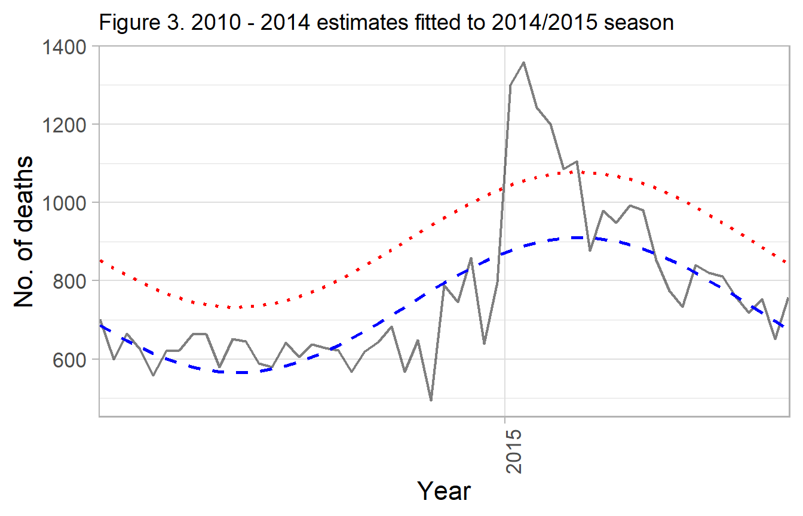
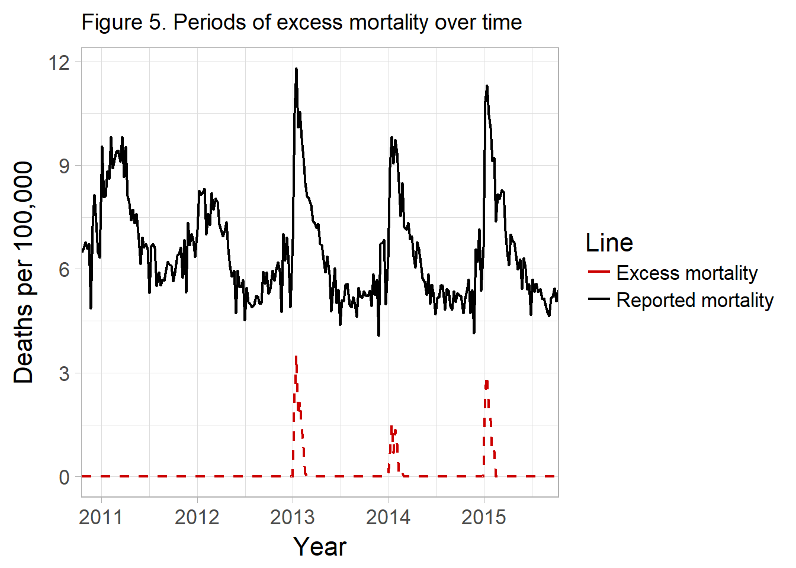

Serfling Model Background
Kevin W. McConeghy
2017-12-20
The primary method paper was a 1963 paper published by Robert Serfling working for the Centers for Disease Control and Prevention.
The paper outlines a strategy for estimating what proportion of deaths are due to influenza. The underlying issue is that many deaths reported due to influenza and pneumonia may be due to other causes, while many deaths attritable other causes may be due to influenza. The primary goal was to develop a “standard curve of expected seasonal mortality”. The concept was that an individual could use historical data to estimate seasonal trends in influenza. Then for a given place-time an researcher could evaluate how many deaths occurred in excess of this baseline rate. Much of the original paper is of little interest given modern computing methods, but the basic concept persists as a reasonable approach to estimating “flu” deaths.
Influenza
Critically, it should be understood that influenza epidemics are highly seasonal with spikes in the winter months, commonly January - February. This seasonality leads to a cyclical rate of influenza morbidity and mortality.
It was noted by early researchers that the rate of reported deaths (red line), may be modeled by a trigonomic function.
Linear and Cyclical Regression Models
The classical ordinary least squares framework is often described in matrix notation as:
\[y_i = X_i\beta + u_{i} \quad \textrm{where} \quad i = 1,..,n\]
Where \(y\) is a dependent variable, \(X\) is a vector of regressors (i.e. independent variables) with \(k\)-dimensions, \(\beta\) is a vector of the coefficients for \(X\), and \(u\) is the residual error term. often simply as: \(y= X\beta+u\).
Given a simple additive model with one independent variable t: \[Eq \ 1. \ y = \alpha_0 + \beta_1*t_1 + u\]
Let t, be the unit of time in figure 1 (week = 1, week=2, …). The above model is inadequate, and will poorly fit the data (figure) because the secular trend is non-linear.
Early investigators such as Serfling proposed that a Fourier term be added to model the cycle like so: \[Eq \ 2. \ y = \alpha_0 + \beta_1*t + sine(\frac{2 \pi t}{52}) + cos(\frac{2 \pi t}{52}) + u\] The original paper used 4-week periods so the period denominator is 13. The waveform will be approximately sawtooth if t resets within a period (0-52). If t is continuous it will be a smooth curve. This allows us to use a linear model which accounts for the cyclical nature of the disease. The original paper recommends one Fourier term.
Example. Fitted line (one Fourier term)
## Add fourier term
fit <- flu_ex %>%
mutate(week2 = row_number(),
theta = 2*week2/52,
sin_f1 = sinpi(theta),
cos_f1 = cospi(theta),
pred_y = predict( lm(fludeaths ~
week2 + sin_f1 + cos_f1, data=.)))
A single Fourier term does a reasonable job approximating the secular trend of disease, except notably during severe influenza epidemics. The black solid line represents a single Fourier term.
During certain seasons, there is a pronounced spike above the predicted (fit) line. For example in the 12-13, 13-14 and 14-15 seasons. These can be subjectively considered severe influenza epidemics. However a goal could be to define objective criteria for epidemics. Such as any time-period 1.64 standard deviations above the fitted line representing a time of severe influenza morbidity and mortality, requiring significant public health intervention.
Estimation approach for attributable or “excess” mortality
The serfling paper describes 4 steps:
- Estimate secular trend
- Remove trend from data
- Estimate seasonal change from adjusted data
- Restore trend component
In this package we operationalize this like so:
- Construct a time-series dataset, with a variable for a flu outcome (i.e. deaths, hospitalizations).
- Estimate a cyclical regression as above;
- Fit a trend line (solid black line)
- predict epidemic threshold (dashed black line)
- Observations falling outside the dashed black line are “excess”
- Quantify values in excess of threshold
Step-wise example
The flumodelr function serflm will perform the above steps. We present the individual steps here for demonstration.
It is assumed the influenza epidemic period begins Oct. 1st, and ends May 31st. This is a conventional “flu” season in the U.S. However individual areas / regions may justify tailored periods. These assumptions are modifiable as options in the regression function.
Step 1. Formatted influenza data
To compute a traditional Serfling model. The input dataframe must have time vector, indicator for the epidemic period (Oct. - May), and measure of influenza morbidity / mortality to be modeled.
flu_ex %>% select(yrweek_dt, fludeaths)
#> # A tibble: 261 x 2
#> yrweek_dt fludeaths
#> <date> <dbl>
#> 1 2010-10-17 6.482143
#> 2 2010-10-24 6.605505
#> 3 2010-10-31 6.779817
#> 4 2010-11-07 6.581818
#> # ... with 257 more rowsserflm() Will allow you to specify the boundaries for epidemic periods, and then compute the baseline off of non-epidemic timepoints. Additionally you can provide it with a logical variable in the dataset which indicates the epidemic period.
Example adding epidemic period indicator
flu_ex <- flu_ex %>%
mutate(epi = if_else(month(yrweek_dt)>=10 | month(yrweek_dt)<=5, T, F))
flu_ex %>%
filter(year>=2014)
#> # A tibble: 94 x 6
#> year week fludeaths yrweek_dt prop_flupos epi
#> <int> <int> <dbl> <date> <dbl> <lgl>
#> 1 2014 1 6.333333 2013-12-29 0.2806884 TRUE
#> 2 2014 2 8.933333 2014-01-05 0.3110651 TRUE
#> 3 2014 3 9.829060 2014-01-12 0.2910588 TRUE
#> 4 2014 4 9.058333 2014-01-19 0.2754467 TRUE
#> # ... with 90 more rowsWe see that there is now an indicator for Oct - May.
Step 2. Fit predicted outcome and epidemic threshold
Here we estimate a model using only non-epidemic period timepoints. The coefficients from this model will then be used to predict values during the epidemic period.
Note regarding standard errors.
By default R’s predict.lm will fit a 95% prediction interval. In Serfling’s original paper it states:
“The epidemic threshold…is placed at a distance of 1.64 standard deviations above the trend line, a level which experience has shown to be useful for distinguishing epidemic increase from random variation.”
serflm follows this method, but the modified serfling function allows for more options for threshold prediction.
Step 2c. Add predicted values to original dataset.
## Fitted values + prediction interval
df_pred <- flu_ex_serfling %>%
predict(base_fit, newdata=., se.fit=TRUE,
interval="prediction", level=0.95)
pred_y0 <- df_pred$fit[,1] #fitted values
pred_y0_serf <- df_pred$fit[,1] + 1.64*sd(df_pred$fit[,1])
df_base <- flu_ex %>%
add_column(., pred_y0, pred_y0_serf)
df_base %>% select(year, week, fludeaths,
pred_y0, pred_y0_serf)
#> # A tibble: 261 x 5
#> year week fludeaths pred_y0 pred_y0_serf
#> <int> <int> <dbl> <dbl> <dbl>
#> 1 2010 42 6.482143 8.162363 9.741912
#> 2 2010 43 6.605505 8.208000 9.787549
#> 3 2010 44 6.779817 8.258536 9.838085
#> 4 2010 45 6.581818 8.312446 9.891994
#> # ... with 257 more rows
Observed Deaths - No. of influenza / pneumonia deaths per 100,000 people.
Predicted Deaths - A fit of the cyclical regression model, (one Fourier term).
Serfling Threshold - The fitted line + 1.64 standard deviations.
Step 3. Compute excess deaths
The next step is to compute the no. of deaths in excess of the epidemic threshold. In addition to being in excess, Serfling applies a rule that values are counted starting from two consecutive timepoints exceeding the threshold, then stopped after two timepoints below the threshold.
df_epi <- df_base %>%
mutate(threshold = if_else(fludeaths > pred_y0_serf, T, F),
epidemic = if_else(threshold==T & lead(threshold)==T, T, NA),
epidemic2 = if_else(lag(epidemic)==T & threshold==T, T, epidemic),
epidemic3 = if_else(lag(epidemic2)==T & lead(threshold)==T, T, epidemic2),
epidemic4 = if_else(lag(epidemic3)==T & threshold==T, T, epidemic3),
epidemic5 = coalesce(epidemic4, F)) %>%
rowwise() %>%
mutate(epidemic = if_else(sum(epidemic, epidemic2, epidemic3,
epidemic4, epidemic5, na.rm=T)>0, T, F),
excess = if_else(epidemic==T & (fludeaths - pred_y0_serf)>0, fludeaths - pred_y0_serf, 0))
df_epi %>% select(year, week, threshold, epidemic, excess)
#> Source: local data frame [261 x 5]
#> Groups: <by row>
#>
#> # A tibble: 261 x 5
#> year week threshold epidemic excess
#> <int> <int> <lgl> <lgl> <dbl>
#> 1 2010 42 FALSE FALSE 0
#> 2 2010 43 FALSE FALSE 0
#> 3 2010 44 FALSE FALSE 0
#> 4 2010 45 FALSE FALSE 0
#> # ... with 257 more rows
serflm() function
##The following command completes the above steps
##fit serfling model
flu_fit <- serflm(data=flu_ex, outc=fludeaths, time=yrweek_dt)
flu_fit
#> # A tibble: 261 x 8
#> year week fludeaths yrweek_dt prop_flupos epi y0 y0_ul
#> <int> <int> <dbl> <date> <dbl> <lgl> <dbl> <dbl>
#> 1 2010 42 6.482143 2010-10-17 0.01331601 TRUE 6.230634 7.374343
#> 2 2010 43 6.605505 2010-10-24 0.01928211 TRUE 6.321874 7.465583
#> 3 2010 44 6.779817 2010-10-31 0.01726122 TRUE 6.417597 7.561306
#> 4 2010 45 6.581818 2010-11-07 0.02305556 TRUE 6.516356 7.660066
#> # ... with 257 more rowsPlot function fluplot
fluplot(flu_fit, xvar=yrweek_dt, fludeaths, y0, y0_ul,
ylab="Mortality per 100,000", title="Serfling Model")
Criticisms of this approach
The historical Serfling model should be considered as important background and an useful educational tool. But probably not applied in an research project.
The authors view the approach as a pragmatic one in the context of the 1960s when computation was difficult, but its implementation is now somewhat dated given modern computing methods. The constrains of needing an easy to estimate linear model are no longer relevant to the modern analyst. The use of a Fourier term to obtain fitted estimates and coefficients for “off-season” timepoints, then construct fitted lines for “on-season” timepoints makes many untested assumptions about the functional form and fixed parameters of seasonal influenza trend lines.
More elegant models (e.g. ARIMA, splines) are now available which may overcame the above limitations, and make fewer assumptions about the functional form.
Additionally the approach is dependent on an accurate baseline period. Whether to include mild or known epidemic seasons, which cut-off to define as the influenza season (e.g. week 40 - week 20) are important but subjective decisions the analyst must make.
The selected threshold for what constitutes “excess” is somewhat arbitrary. The original Serfling paper describes 1.64 standard deviations for 2 or more weeks as criteria. Recent papers have used the 95% prediction interval.